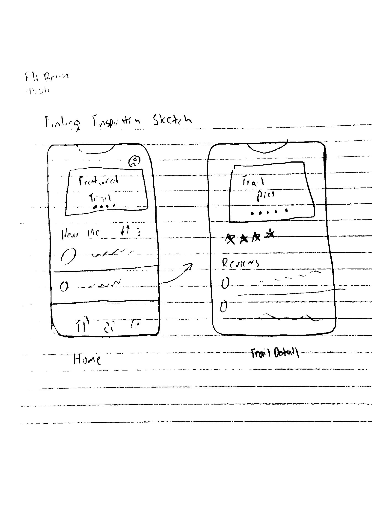

Finding Inspiration Blog

Today I will be reflecting on the above piece, "Late Palatine Light" by April Gornik. Gornik is an American artist who primarily
works on dreamlike environmental related paintings. This piece stood out to me because of it's emphasis on nature.
Color Scheme
Because this piece is just charcoal on paper, it's simplicity caught my eye. Nothing in this piece stands out, aside from the undeniable scale and feeling of nature. The simple black and white leads me to believe a storm could be rolling in, or it could be a beautiful dusk walk on a trail.
Position
I really like the angle Gornik chose to create. Looking up towards the tree's and sky, it almost seems as if this is a photograph. I think this design choice emphasizes how small and insignificant we are compared to nature and compared to the planet.
Rule of Thirds
The interesting parts are placed along the lines of thirds. Empty space is used very effectively on the left side to highlight the importance of the tall tree on the right third.
Sketch
I'm inspired to do something nature related, and I really enjoy hiking. Here is a quick sketch of a mobile app that will allow users to find and review nearby trails (I'm aware similar apps already exist). 
So what?
Inspiration is very important for a great user interface. Additionally, energy and passion are required to build on said inspiration.